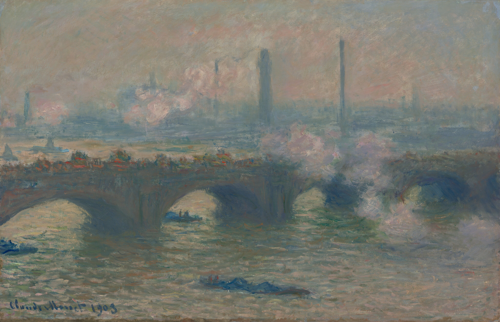
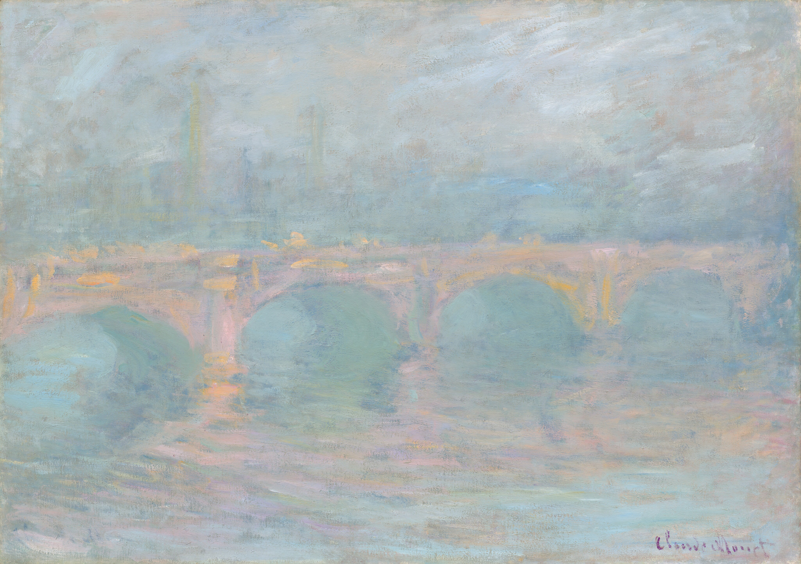
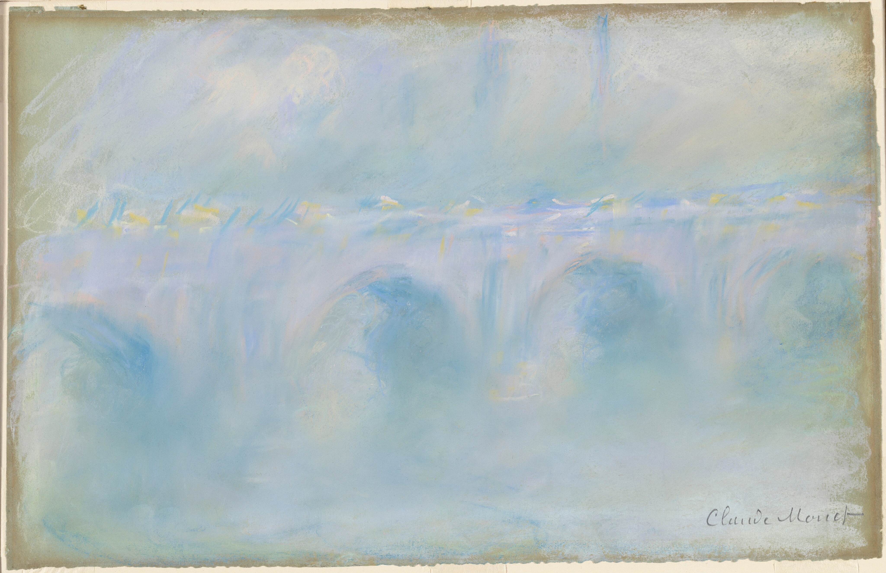
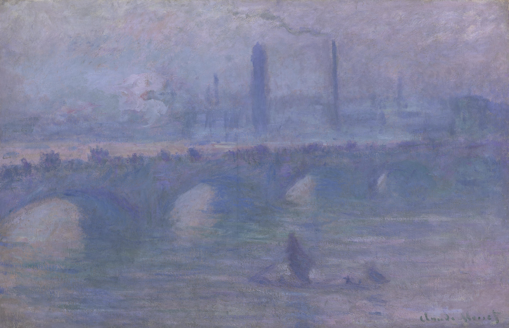

1
Waterloo Bridge
“
When you go out to paint, try to forget what objects you have before you, a tree, a house, a field, or whatever. Merely think, here is a little square of blue, here an oblong of pink, here a streak of yellow.
”
Hover to view the full painting

Waterloo Bridge: Effect of Sunlight in the Fog
1903
National Gallery of Canada
Ottawa, Canada

Waterloo Bridge in London
1902
The National Museum of Western Art, Tokyo
Tokyo, Japan

Waterloo Bridge, London
1903
Carnegie Museum of Art
Pittsburgh, United States

Waterloo Bridge, Sunlight Effect
1900
Milwaukee Art Museum
Milwaukee, United States

Waterloo Bridge
1903
Denver Art Museum
Denver, United States

Waterloo Bridge, Gray Day
1903
National Gallery of Art
Washington DC, United States

Waterloo Bridge, London, at Dusk
1904
National Gallery of Art
Washington DC, United States

Waterloo Bridge, London, at Sunset
1904
National Gallery of Art
Washington DC, United States

Waterloo Bridge
1901
National Gallery of Art
Washington DC, United States

Waterloo Bridge, Morning Fog
1901
Philadelphia Museum of Art
Philadelphia, United States

Waterloo Bridge, Sunlight Effect
1903
The Art Institute of Chicago
Chicago, United States

Waterloo Bridge, Gray Weather
1900
The Art Institute of Chicago
Chicago, United States